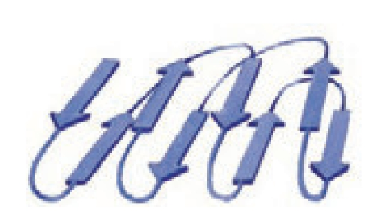
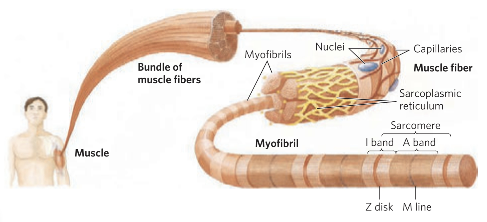

4.Protein Structure and Function
Return to IntroductionPrevious:3.Amino Acids and Peptides
Next:5.Protein Handling and Analysis
4.1.Protein Structure
The basic covalent structure of a protein is formed by the arrangement and combination of 20 amino acids, storing all the information for the higher-order structure of the protein. Within a peptide chain, and between different peptide chains, proteins form more complex three-dimensional spatial structures through twisting and folding. The stability of protein structure is maintained by both covalent and non-covalent bonds. While a protein has nearly a unique structure, it does not mean that the conformation of a protein is immutable. Sometimes, a change in conformation can lead to a change in the physiological function of the protein, allowing it to adapt to the different metabolic needs of the body.
As mentioned in section 2.Biological Molecules, configuration refers to the spatial arrangement of all atoms and substituents in a molecule, while conformation refers to all the relative spatial arrangements of some atoms and substituents in a molecule resulting from the free rotation about single bonds. It has been discussed earlier about the two types of covalent bonds (peptide bond, disulfide bond) and four types of non-covalent bonds (hydrophobic interactions, van der Waals forces, ionic bonds, hydrogen bonds). These six major types of chemical bonds (forces) are crucial for maintaining the stability of protein structures. Protein structures are divided into four levels: primary structure, secondary structure, tertiary structure, and quaternary structure.
4.1.1.Primary Structure
The primary structure refers to the composition and sequence of amino acids in a polypeptide chain, as well as the number and association of polypeptide chains. It is the most basic structure of a protein, storing all the information needed for correct folding of higher structures. Twenty amino acids undergo dehydration condensation to form peptide bonds, constituting a peptide chain. Since the peptide bond is a covalent bond, the primary structure is also referred to as the covalent structure.
4.1.2.Secondary Structure
The secondary structure refers to the regular conformation formed by the folding of a polypeptide chain under the action of hydrogen bonds. The secondary structure can also refer to local conformations within a polypeptide chain. The frequency and role of different secondary structures vary among different proteins. The most common secondary structures include four types, all stabilized by hydrogen bonds.
(Ⅰ) α-Helix
α-helix is the most common secondary structure. The polypeptide chain is tightly coiled around a central axis to form a helical structure. The helix repeats every 3.6 amino acid residues, with a pitch of 0.54 nm. Importantly, the α-helix is a right-handed helix.
In biochemistry, the α-helix and the B-form DNA double helix are right-handed helices, while collagen is a right-handed helix formed by twisting three left-handed helical peptide chains together. The Z-form DNA double helix and the sugar chains of amylose exhibit left-handed helices.
The R-groups of the amino acids forming the helix do not participate in the helical structure, causing them to protrude outward.

Stabilization of the α-helix is achieved by hydrogen bonds: specifically, the hydrogen bond formed between the N-H bond in each amino acid residue and the C=O bond in the fourth amino acid residue ahead. This intramolecular hydrogen bond formation makes the α-helix a stable helical structure, which is prevalent in proteins, such as in alpha-keratin. Under heat, the α-helix can temporarily form a β-pleated sheet conformation, which then reverts back when cooled, explaining why wool garments shrink after washing.
Factors affecting the stability of the α-helix:
- Proline (Pro) effect: Proline is the only amino acid among the 20 amino acids that contains a pyrrolidine ring. After forming a peptide bond, there is no extra hydrogen available to form hydrogen bonds with other amino acids. Additionally, the Cα-N bond cannot rotate, leading to the formation of kinks in the helix at Pro positions.
- Glycine (Gly) effect: Glycine has only a hydrogen atom as its R-group, making it highly flexible compared to other amino acids, and thus does not easily form a regular α-helix.
Pro and Gly are more frequently found at the turn regions of β-turns.
- Electrostatic repulsion: When multiple positively or negatively charged amino acids are arranged continuously, significant electrostatic repulsion occurs at pH 7, which is unfavorable for helix formation.
- Steric hindrance: Continuous arrangement of branched-chain amino acids like threonine, isoleucine, and valine results in significant steric hindrance, impeding helix formation. This explains why peptide chains prefer right-handed helical folding, as the side chains of left-handed helical amino acids have larger steric hindrance.
The formula to calculate the length of an α-helix (assuming the helix contains n amino acid residues):
- Total length between the two ends of the helix: (0.54 / 3.6)∙n = 0.15∙n
- Fully extended length of the helix: 0.36∙n
(Ⅱ) β-Sheet
β-sheet is a common secondary structure. The main chain of the polypeptide adopts a zigzag shape, forming a fold similar to a crumpled structure. Adjacent peptide chains can be arranged in a parallel or antiparallel manner, and the stability of this structure is maintained by inter-chain hydrogen bonds. The antiparallel arrangement is more stable than the parallel arrangement.
| The parallel manner (with an inter-residue axis distance of 0.325 nm) | antiparallel manner (with an inter-residue axis distance of 0.35 nm) |
|---|---|
The β-sheet structure exhibits higher tensile strength, and fibroin proteins are predominantly composed of β-sheets. The Ala and Gly have the smallest side chains (R-groups) and are abundantly present in β-sheets, alternating with each other.
The length of the β-pleated sheet can be calculated using the following formulas (assuming the sheet contains n amino acid residues):
- Parallel manager: 0.325∙n
- Antiparallel manager: 0.35∙n
(Ⅲ) β-Turn
| Gly is found at the turn regions | Pro is found at the turn regions |
|---|---|
β-turn is a common secondary structure composed of six amino acid residues. The polypeptide folds back by 180°, altering its direction, and is often found on the surface of globular proteins. The stability of β-turn is also maintained by hydrogen bonds between the first and fourth amino acid residues.
(Ⅳ) Random Coil
Random coil is a loose and irregular spatial structure formed by the random twisting and folding of a polypeptide chain. The active centers of enzymes are often found in coils. For globular proteins, a random coil-like polypeptide chain facilitates the formation of an approximately spherical three-dimensional structure.
4.1.3.Supersecondary Structure and Domains
Four modular protein secondary structures were introduced above. To assemble the puzzle into a three-dimensional structure, a large number of repeated secondary structures must be stacked and assembled. The two structures (or regions) mentioned below serve as "bridges" between the secondary and tertiary structures.
Super-secondary structure is a regular combination formed by the mutual arrangement of adjacent secondary structures within a polypeptide chain.
| αα | βββ | βαβ | β桶 |
|---|---|---|---|
|  |
Domain is three-dimensional regions (units) formed by further twisting and folding of the polypeptide chain based on secondary and super-secondary structures. When a polypeptide chain folds, the folding of each domain is independent, and these domains come together and eventually form an approximately spherical protein molecule. Therefore, domains are the basic units of protein folding.
Domains are also referred to as functional domains, as the functional sites of proteins are often located within the gaps between structural domains. The active center of an enzyme is often formed by the combination of multiple structural domains, and the relative movement between domains is also conducive to the binding of the active site to the substrate.
4.1.4.Tertiary Structure
Tertiary structure refers to the complete and complex spatial structure formed by further twisting and folding of a polypeptide chain based on secondary structure, super-secondary structure, and domains, aided by non-covalent bonds. The arrangement of α-helices and β-sheets, stacking, and aggregation constitute the tertiary structure of a protein. The arrangement is entirely determined by the amino acid sequence information in the primary structure.
Unlike the peptide bond in the primary structure and the hydrogen bond in the secondary structure, non-covalent forces such as hydrophobic interactions, hydrogen bonds, ionic bonds (also known as salt bridges), and van der Waals forces maintain the tertiary structure. Among them, the hydrophobic interaction is the most significant force, and there is also the effect of disulfide bonds.
All natural proteins have tertiary structures, which are often spherical. Due to hydrophobic interactions, most hydrophobic (nonpolar) amino acids are buried inside the protein molecule, while most hydrophilic (polar) amino acids are exposed on the outer surface, forming a hydrophilic protein shell. Therefore, spherical proteins often have high solubility.
All the non-polar (hydrophobic) amino acids are:
Leu, Ile, Phe, Val, Trp, Met, Pro. Ala is slightly polar, falling between polar and non-polar.
From the tertiary structure onward, proteins exhibit their true activity. In contrast to the secondary structure, even amino acids that are far apart on the peptide chain can interact within a folded protein structure. Some proteins consist of only one polypeptide chain, and their highest structure is the tertiary structure, such as myoglobin, ribonuclease A, lysozyme, and cytochrome C.
4.1.5.Quaternary Structure
Before discussing the quaternary structure, it is important to introduce the concept of subunit, which refers to a polypeptide containing a complete tertiary structure. Subunits are usually composed of a single polypeptide chain, but in cases where multiple peptide chains are connected by disulfide bonds, such as the A and B chains of insulin, they can be considered a single subunit. These interconnected subunits, when assembled via non-covalent bonds, form a more complex complete spatial structure known as the protein's quaternary structure, and proteins exhibiting quaternary structure are also called oligomeric proteins.
Different subunits can carry out independent yet related functions. For instance, in enzyme molecules, regulatory and catalytic subunits exist. Most oligomeric protein structures are symmetric and are composed of repeated combinations of identical or different subunits, resulting in an even number of subunits. For example, hemoglobin has four subunits, triose phosphate isomerase has four subunits, and aspartate transaminase contains 12 subunits.
The quaternary structure of proteins carries several implications:
- Polypeptide chains are encoded based on genetic information in nucleic acid chains, and there is a linear correspondence between the amino acid sequence in the polypeptide chain and the nucleotide sequence in nucleic acids. Thus, it is more economical in terms of genetic capacity to encode a single polypeptide chain that will assemble into an oligomer than to encode the same relative molecular mass of individual polypeptide chains.
- The assembly of subunits reduces the ratio of protein surface area to volume, making the protein structure more stable.
- Oligomeric proteins with multiple active sites often feature a unique type of regulation called allosteric regulation, where binding of effector molecules induces changes in the interaction between subunits, thereby altering the protein's activity.
In summary, while the quaternary structure forms the basis of allosteric effects, not all proteins with allosteric effects exhibit quaternary structure. For instance, cytochrome P450 is a monomeric protein but also exhibits allosteric effects.
4.2.Protein Denaturation, Renaturation, and Precipitation
This section is placed in the chapter Protein Structure and Function because the underlying logic of protein denaturation, renaturation, and precipitation is the change in protein molecular structure.
4.2.1.Protein Denaturation
Protein denaturation refers to the phenomenon where, under the influence of external physicochemical factors, the secondary bonds maintaining the spatial structure of a protein are disrupted, leading to the destruction of the protein conformation and causing the loss of biological activity and changes in physicochemical properties. Essentially, it is a process of protein unfolding.
Here are some common denaturation factors:
| Physical Factors | Mechanism |
|---|---|
| Heat | When the temperature slowly rises, the protein conformation is usually stable. However, as the input energy to the system increases, enzyme-catalyzed reactions accelerate. When the temperature exceeds a certain value, the protein begins to unfold and denature. Different proteins (enzymes) have different temperature tolerances; for example, α-amylase can withstand temperatures up to 70°C, while Taq DNA polymerase can withstand temperatures as high as 100°C, making it suitable for PCR. |
| High Pressure | High pressures, such as several hundred MPa, are commonly used for microbial sterilization, where they disrupt various macromolecules inside the cell. |
| Vigorous Stirring or Vibration | The shear force produced can disrupt the protein structure. |
| Radiation | Common types of radiation include ultraviolet light and ionizing radiation (X-rays, γ-rays, etc.). On one hand, radiation can break DNA chains, thus disrupting protein synthesis. On the other hand, the free radicals produced by ionizing radiation acting on water molecules can damage the structure of proteins, nucleic acids, and other macromolecules. |
| Ultrasound | The mechanical effects and local temperature rise caused by ultrasound can disrupt protein structure. |
| Chemical Factors | Mechanism |
|---|---|
| Strong Acids and Bases | Extreme pH values alter the charge carried by the protein, leading to electrostatic repulsion and the breaking of certain hydrogen bonds. |
| Heavy Metal Ions | Heavy metal ions such as Hg+ and Ag+ modify certain essential groups in enzyme molecules, such as -SH, thus disrupting the enzyme's original folding and stability. |
| Denaturing Agents | Urea and guanidine hydrochloride can reduce the hydrophobic interactions that stabilize the tertiary structure, while competing with the peptide backbone for hydrogen bonds, thereby disrupting the protein's secondary structure. |
| Detergents | Sodium dodecyl sulfate (SDS) is an anionic detergent that disrupts the hydrophobic interactions, thus disrupting the spatial structure of the protein. This property has led to the development of SDS-PAGE. |
| Organic Solvents | Prolonged exposure to organic solvents such as ethanol and acetone can also lead to protein denaturation (hence, when precipitating proteins with organic solvents, the process should be conducted quickly at low temperatures). |
After protein denaturation, the following characteristics often appear:
- Loss of Biological Activity: Even minor changes in local structure can lead to the loss of activity.
- Destruction of Tertiary Structure while Preserving Primary Structure: This forms the basis of protein renaturation.
- Reduced Solubility: The destruction of the tertiary structure exposes hydrophobic groups, thus reducing solubility—reduced solubility ≠ precipitation
- Increased Viscosity
- Changes in Optical Properties: Optical rotation and UV absorption are altered.
- Loss of Crystallization Ability
- Increased Susceptibility to Proteolytic Enzymes: After cooking food, proteins denature, causing the molecular structure to loosen and making them more susceptible to proteolytic enzymes in the stomach and intestines.
4.2.2.Protein Renaturation
Protein renaturation refers to the spontaneous refolding of the primary structure of a protein back to its correct conformation after the physicochemical factors causing denaturation are removed from the external environment. This leads to the restoration of the biological function and physicochemical properties of the protein. For example, after urea, guanidine hydrochloride, or heavy metal salts are removed by dialysis, the randomly coiled, denatured peptide chain spontaneously folds back into its correct conformation, restoring catalytic activity. This is because protein denaturation only destroys the tertiary structure while preserving the primary structure, and all the information required for spontaneous folding into the correct conformation is stored in the amino acid sequence of the primary structure.
Proteins that undergo renaturation after denaturation are referred to as reversible denaturation. In general, in this type of denaturation, the tertiary and quaternary structures of the protein are disrupted, but the secondary and primary structures are preserved. However, in most cases, proteins cannot fully recover their original properties after denaturation, and this is referred to as irreversible denaturation, where both secondary and tertiary structures are disrupted.
4.2.3.Protein Precipitation
Protein precipitation refers to the phenomenon where changes in external conditions disrupt the double layer or hydration layer that stabilizes a protein solution, causing protein molecules to aggregate and precipitate. Not all protein denaturation leads to precipitation, and protein precipitation does not necessarily involve denaturation. Based on whether proteins can be resolubilized after precipitation, two types of precipitation can be distinguished:
(Ⅰ) Reversible Precipitation
Isoelectric Point Precipitation: At the isoelectric point, the net charge of protein molecules is 0, disrupting the double layer and making the protein molecules prone to collision, aggregation, and precipitation. Since different proteins have different isoelectric points, adjusting the solution pH can sequentially precipitate different proteins (applicable to amino acids as well). The precipitated protein retains its natural conformation and can be resolubilized by adjusting the pH away from the protein's pI. However, due to the strong hydration layer of some proteins, incomplete precipitation may occur even at the pI.
Salting In and Salting Out:
- Salting In: When a small amount of neutral salt (such as NaCl, Na2SO4, (NH4)2SO4) is present in the solution, protein molecules adsorb these salt ions, increasing the amount of like charges on the protein surface, enhancing electrostatic repulsion, promoting the formation of the double layer, and strengthening the interaction between the protein and water molecules, thus enhancing the protein's solubility.
- Salting Out: When a large amount of neutral salt is present in the solution, it neutralizes the surface charge of the protein, binds a large number of water molecules, and thus disrupts the hydration and double layers of the protein, causing the protein molecules to aggregate and precipitate, thereby reducing the protein's solubility. The precipitated protein does not denature, so by adjusting the salt concentration, different proteins can be sequentially precipitated and separated.
Precipitation by Polar Organic Solvents: Polar organic solvents (such as ethanol and acetone) compete for water molecules on the protein surface, reducing the dielectric constant of the solution, disrupting the protein's hydration and double layers. However, organic solvents also act as denaturing agents, so when precipitating proteins, the process must be carried out quickly at low temperatures.
(Ⅱ) Irreversible Precipitation
Heavy Metal Salt Precipitation: When the solution pH > pI, protein molecules deprotonate and carry a net negative charge, allowing them to bind with heavy metal ions (Hg2+, Ag+, Pb2+), forming insoluble salts and precipitating. As mentioned earlier, heavy metal ions are denaturing agents, so this process is irreversible.
After accidental ingestion of heavy metal salts (such as consuming a large amount of pencil lead), the ions can be neutralized by consuming large quantities of high-protein foods like milk or egg whites, forming insoluble salts that can then be excreted from the body.
Biopolymer Precipitation: When the solution pH < pI, protein molecules protonate and carry a net positive charge, enabling them to bind with biopolymers such as tannic acid, phytic acid, and tungstic acid to form insoluble salts and precipitate. This process also causes protein denaturation.
Heat-Induced Precipitation: High temperatures disrupt the spatial structure of proteins, exposing hydrophobic groups, reducing solubility, and causing precipitation. Adding a small amount of salt accelerates the disruption of the hydration layer. When the pH is adjusted to the pI, the loss of intermolecular double layer further promotes precipitation and solidification. This principle is utilized in the culinary technique "boiling tofu in brine".
4.3.Protein Functions
The role of proteins in organisms is self-evident, as they participate in and maintain processes such as cell growth, renewal, and repair. The following summarizes several typical functions of proteins:
- Energy Supply When the body's energy supply is insufficient (such as during severe hunger or fasting), proteins undergo decomposition metabolism to produce amino acids, which then enter the TCA cycle for complete oxidation, releasing a large amount of energy to maintain stable metabolic activity in the body.
- Catalytic Function The most important function of proteins is catalysis. The vast majority of enzymes are proteins with catalytic capabilities, and almost all biochemical reactions in metabolism are catalyzed by enzymes.
- Immune Protection Antibodies(Ig), which are proteins (immunoglobulins), can bind to specific antigen molecules to clear antigens and protect the body from harm. Interferons refer to specific glycoproteins synthesized by higher animal cells induced by viruses, inactivated viruses, viral nucleic acids, or artificially synthesized double-stranded RNA, with high activity and broad-spectrum antiviral capabilities to protect the body and inhibit viral proliferation and assembly.
- Regulatory Function There are many peptide hormones in animals, such as insulin, glucagon, etc., which are physiologically active substances that regulate the body's substance and energy metabolism. In addition to hormones, there are also regulatory proteins encoded by regulatory genes, which can be classified as inhibitory proteins and activating proteins. They control the expression of structural genes by acting on the operon structure of prokaryotes.
- Transport Function The body contains a large number of carrier proteins responsible for the specific transport of certain substances, such as hemoglobin responsible for transporting and delivering O2, lipoproteins responsible for lipid transport, transferrin, ceruloplasmin responsible for metal ion transport. The body also contains membrane transport proteins, which are the basis for the transport of substances into and out of cells through facilitated diffusion or active transport, such as aquaporins, glycerol channels, glucose transport proteins, etc.
- Movement Function The contraction force of muscles is generated by two proteins—actin and myosin—through transient interaction and sliding, which triggers contraction. During this process, ATP provides energy and converts chemical energy into mechanical energy for muscle contraction and stretching. There is also a class of motor proteins, such as kinesin, dynein, which are the basis for muscle contraction, bacterial flagellar rotation, and other movements.

- Storage Function Proteins themselves can serve as a nitrogen source to provide nitrogen for living organisms. For example, plant seed globulins can provide a nitrogen source for seed germination, and myoglobin also has the function of storing O2.
- Structural Function Structural proteins can serve as the cell's skeleton, providing support and protection, such as collagen, α-keratin, which are abundant in hair, scales, connective tissues, and cartilage.
- Signal Recognition Glycoproteins on biological membranes can be used to recognize extracellular signals and convert them into corresponding intracellular responses. Some peptide hormones and growth factors are responsible for transmitting extracellular signals. Membrane-bound sugar chains also participate in cell recognition, cell adhesion, and cell immunity processes.
- Toxicity Toxic proteins can cause poisoning or even death in organisms, such as diphtheria toxin produced by bacteria, snake venom, scorpion venom, bee venom, ricin from plants, etc.
- Fluorescence Fluorescent proteins and ATP react under the action of luciferase, causing fireflies to light up.
4.3.1.Homologous Proteins
Homologous proteins refer to a class of proteins that originate from different organisms but perform the same or similar physiological functions. The primary structure determines the higher-level structure, and the primary structures of homologous proteins have sequence homology involving invariant amino acids alternating with variable residues.
For example, hemoglobin, insulin, cytochrome C, etc., are typical homologous proteins. The following image shows the sequence of human cytochrome C, with yellow positions representing conserved amino acids.
4.3.2.Fibrous Proteins
Fibrous proteins refer to a class of proteins with linear or layered structural polypeptide chains. These proteins often contain a large number of single repetitive forms of secondary structure. Compared to globular proteins, fibrous proteins have poor water solubility due to the distribution of hydrophobic amino acids on their surfaces and interiors. Typical fibrous proteins include α-keratin, fibroin, collagen, elastin, etc. These proteins exemplify the relationship between structure and biological function, as fibrous proteins play a supportive and protective role in organisms.
α-Keratin Abundant in mammalian hair, fur, feathers, scales, claws, spines, and horns, serving as the cell's skeleton. α-Keratin is a right-handed helical structure, with a large amount of α-helix in its secondary structure, which entwines and twists into more complex complexes. The helices are connected by disulfide bonds (-S-S-), providing high hardness.
Biochemical Mechanism of Hair Perming: Disruption and Reconnection of Disulfide Bonds:
As mentioned earlier, the secondary structure of α-keratin is composed almost entirely of α-helices, which are intertwined by disulfide bonds to form a "steel cable" structure with extremely high mechanical strength. α-Keratin is abundant in animal hair (including human hair).
During hair perming, the hair is first curled and then coated with a reducing agent (usually a compound containing a thiol group, such as beta-mercaptoethanol), which can open the disulfide bonds between the polypeptide chains of α-keratin in the hair fiber and break the "steel cable" structure. At the same time, the wet and hot perming process can destroy non-covalent forces such as hydrogen bonds, causing the α-helix structure to extend. At this point, the rigid structure of the hair has been destroyed, and it is time to reshape the structure.
After perming, the reducing agent is removed, an oxidizing agent is applied, and new disulfide bonds are established between Cys pairs (which are no longer Cys residues as before, but alternating residue pairs) in adjacent polypeptide chains. Finally, after washing and drying, the polypeptide chains return to their original α-helical conformation. At this point, the hair will be curled in the desired style because the new disulfide bonds force some α-helical bundles in the hair fiber to curl.
Collagen Found in tendons, cartilage, corneas, and other connective tissues. The polypeptide chain of collagen forms a large left-handed helix, which is twisted from three right-handed helical chains. The most abundant amino acid in collagen is Gly, accounting for approximately 35%. It also contains two non-protein amino acids—hydroxyproline (HyPro) and hydroxylysine (HyLys)—synthesized by Pro and Lys under the action of hydroxylase, both of which require vitamin C as a cofactor. The amino acid sequence of collagen is generally a repeating unit of tripeptides, Gly-X-Pro or Gly-X-HyPro (X represents any other amino acid). Collagen is also a glycoprotein.
Silk Fibroin Abundant in spider webs and silkworm silk. Its polypeptide chain is primarily composed of β-folds (or almost entirely), with a large number of Ala and Gly residues, allowing the R groups of adjacent peptide chains to intertwine and stack closely, providing high stability.
Wool garments, such as sweaters🧥, tend to shrink when washed in hot water and then dried. On the other hand, silk products, like silk scarves, undergo the same treatment without shrinking.
This is because the fibrous protein in wool, mainly composed of α-helices, undergoes temporary extension and stretching during the heat treatment. However, upon cooling and drying, it reverts back to its original spiral shape, resulting in some degree of shrinkage. In contrast, the polypeptide chains of fibroin, the core protein in silk, are already highly extended in a β-folded conformation, which gives silk its tensile strength.
However, this type of fiber, like silk, cannot withstand further stretching.
4.3.3.Myoglobin
Billions of years ago, the Earth underwent a transition from anaerobic to aerobic conditions, and as a result, living organisms evolved to carry out various metabolic activities based on oxygen. For instance, in aerobic respiration, the reduction of substrates leads to the transfer of reduced hydrogen to oxygen molecules at the end of the respiratory chain, resulting in much higher energy efficiency compared to anaerobic respiration. Additionally, the appearance of oxygen-carrying proteins such as myoglobin and hemoglobin further demonstrates the highly adaptive nature of living organisms to their environment.
Myoglobin (Mb) refers to a type of oligomeric protein found in mammalian muscle tissue that is responsible for the transfer and storage of O2. It consists of a single polypeptide chain of 153 amino acid residues, with a heme prosthetic group and an oxygen-binding site. Myoglobin is a typical globular protein with good water solubility and contains a large amount of α-helical structures within its molecular framework.
Since proteins cannot spontaneously bind with O2, they require a mediator to assist in the process. The heme prosthetic group (iron protoporphyrin IX) is composed of Fe2+ and protoporphyrin IX, where Fe2+ serves as the oxygen-binding site and is fixed by protoporphyrin IX. Iron ions can exist in two oxidation states, Fe2+ and Fe3+, leading to the formation of ferrous hemoglobin and ferric hemoglobin. However, only ferrous hemoglobin has the ability to bind with O2, so in order to ensure oxygen-carrying capacity in myoglobin and hemoglobin, it is essential to maintain the reduction of Fe2+. Both of these protein molecules contain a peptide microenvironment that can stabilize heme, and more importantly, prevent the oxidation of Fe2+. Heme is composed of Gly, Fe2+ and succinyl-CoA.
The following image shows the conformation of myoglobin (Mb), where it is evident that myoglobin is the result of the folding of a single polypeptide chain, with the red structure at the center representing the heme, located between two His residues. As a result, myoglobin can only bind to one molecule of O2.
Myoglobin primarily functions as an O2 storage protein, accepting O2 released from hemoglobin in the blood. Marine organisms such as whales, seals, and dolphins, despite needing to breathe, can stay submerged for extended periods due to the high abundance of myoglobin in their muscle tissues, giving their muscle tissue a reddish-brown color.
Muscles with a high myoglobin content possess greater O2 storage and transport capacity, which is crucial for prolonged and sustained physical activity and lactate metabolism. Therefore, the myoglobin content serves as an important indicator of an athlete's endurance level.
4.3.4.Hemoglobin
In the circulatory system of animals, almost all O2 is transported through the hemoglobin contained in red blood cells.
Hemoglobin (Hb) refers to an oligomeric protein present inside red blood cells, responsible for binding and transporting O2, as well as other substances such as CO2 and H+. Hemoglobin is formed by the assembly of four polypeptide chains, each containing a heme prosthetic group and an oxygen-binding site. In adults, the hemoglobin HbA consists of two identical α chains and two identical β chains. The tertiary structure of each subunit of hemoglobin is highly similar to that of myoglobin, with a significant presence of α-helices, making it a globular protein.
Hemoglobin's binding and transport of O2 are closely related to the interaction and conformational changes of its four subunits:
Allosteric effect This refers to the non-covalent reversible binding of a ligand to a protein, leading to a change in the protein's conformation and subsequently altering its biological activity. Proteins that exhibit allosteric effects are known as allosteric proteins, and ligands that enhance protein physiological activity are called allosteric activators, while those that inhibit protein physiological activity are termed allosteric inhibitors. Hemoglobin exists in two conformations: the deoxy T-state and the oxy R-state. These two conformations are interchangeable, with the R-state having a higher affinity for O2, making the transition from the T-state to the R-state the process of O2 binding, and conversely, the transition from the R-state to the T-state the process of O2 release.
(Ⅰ) Positive cooperative interaction of O2
Biochemists have proposed two models when studying the conformational changes of hemoglobin upon O2 binding: the concerted model (a) suggests that when hemoglobin begins to bind O2, all four subunits undergo conformational changes simultaneously, allowing them to bind O2 simultaneously; on the other hand, the sequential model (b) indicates that the conformational change of one subunit can induce similar changes in adjacent subunits. The mechanism by which hemoglobin carries O2 more closely resembles the second model:
When a subunit binds with a molecule of O2, it transitions from the T-state to the R-state, facilitating the easier binding of the second O2 to another subunit of hemoglobin. The subsequent change in the latter subunit's conformation promotes the binding of the third O2 to the third subunit, and so on. Meanwhile, after the first subunit releases O2, it transitions from the R-state to the T-state, promoting the easier release of O2 by the second R-state subunit, and so forth. This phenomenon is known as the allosteric effect.
The allosteric effect of a protein exists in two forms: homotropic effect, where the binding of one effector influences the binding of another identical effector to the protein, and heterotropic effect, where the binding of one effector influences the binding of a different effector to the protein. It is noteworthy that the term "influence" implies that this effect can be either activation or inhibition. If the binding of one effector promotes the binding of another, it is known as a positive cooperative effect; conversely, inhibiting the binding of another effector is termed a negative cooperative effect. Hence, the mechanism of O2 binding by hemoglobin is referred to as a positive cooperative homotropic effect.
(Ⅱ) Bohr effect
Apart from carrying O2, hemoglobin can also transport H+ and CO2, both of which act as allosteric inhibitors of hemoglobin. When the partial pressure of CO2 is high in the environment (which typically leads to a decrease in pH and an increase in H+ concentration), the high concentration of H+ and CO2 exhibits a greater affinity for the R-state subunits (CO2 binds to the amino-terminal α-amino group of the peptide chain in the form of carbaminohemoglobin), causing a conformational change and promoting the transition of R-state subunits to T-state, ultimately reducing the affinity for O2 and accelerating O2 release.
In the muscle tissues during strenuous exercise, the concentrations of CO2 and H+ increase, promoting the release of a large amount of oxygen by hemoglobin flowing through the muscle tissue, thereby providing oxygen for muscle energy supply. After hemoglobin carries CO2 to the lungs, the high concentration of O2 in the lungs prompts the binding of O2 to hemoglobin and the release of CO2</sub;, the latter is then exhaled through respiration; simultaneously, the binding of H+ also prevents acidosis caused by excessively low pH.
(Ⅲ) 2,3-BPG effect
2,3-BPG (2,3-bisphosphoglycerate) is a regulatory substance in red blood cells that, when bound to the R-state subunits of hemoglobin, promotes the transition from the R-state to the T-state, significantly reducing the affinity for O2 and enhancing O2 release. For example, when individuals enter high-altitude regions with lower pO2, the concentration of 2,3-BPG inside red blood cells gradually increases. As the blood flows through hypoxic tissues, it promotes the release of O2 by hemoglobin to supply oxygen to the tissues.

Fetal hemoglobin, HbF, is composed of two α chains and two γ chains. It has a higher affinity for O2 and a much lower affinity for BPG compared to adult hemoglobin, HbA. This ensures that the fetus receives an adequate supply of oxygen from the mother through the placenta.
(Ⅳ) Oxygen saturation curve
The oxygen saturation curve is plotted with the partial pressure of oxygen (pO2) on the x-axis and the oxygen saturation on the y-axis. The curve for myoglobin (Mb) is hyperbolic, while the curve for hemoglobin (Hb) is sigmoidal. This difference arises because when the pO2 concentration increases to trigger the allosteric effect, the affinity of each subunit of hemoglobin for O2 rapidly increases, enhancing the efficiency of O2 transport. When H+, CO2, and BPG are present, they can induce an allosteric inhibitory effect that reduces hemoglobin's affinity for O2, causing the curve to shift to the right (requiring a higher pO2 to achieve the same oxygen-carrying effect).
(Ⅴ) Molecular Disease
Sickle cell anemia is a genetic disorder characterized by a mutation in the HbS hemoglobin, where a valine replaces a glutamic acid at the sixth position from the N-terminus in both β-chains of the HbS molecule. The mutated hemoglobin exhibits altered properties, decreased solubility, and a tendency to aggregate into fibers, leading to local deformation of red blood cells, especially in the deoxygenated state, resulting in more severe symptoms. These cells are prone to rupturing, forming gel-like masses that can block blood vessels, restrict blood flow, cause tissue ischemia, and subsequently affect the normal functioning of organs. In certain regions of Africa, the incidence of this disease is very high, often resulting in death during childhood. Affected individuals experience weakness, lethargy, and cannot engage in strenuous physical activity.
4.3.5.Immunoglobulin
Immunoglobulin (Ig), also known as antibody, can bind to bacteria, viruses, or other large molecular antigens and clear them. Immunoglobulin is essentially a glycoprotein produced by plasma cells differentiated from B lymphocytes. Immunoglobulin consists of four peptide chains — 2 heavy chains and 2 light chains. The two short chains in red are the light chains, and the long chain in blue is the heavy chain. The chains are connected by disulfide bonds to form a Y-shaped structure. The region composed of the two variable regions at the top of the Y is the antigen-binding site, which contains two antigen-binding sites.
There are five types of immunoglobulins in the body, among which IgG is the most abundant:
| Ig G | Ig M | Ig A | Ig D | Ig E |
|---|---|---|---|---|
The specific binding between antigen and antibody is the basis for many biochemical reactions and detections. For example, in affinity chromatography, a specific antigen molecule is connected to the chromatographic column to selectively bind target cells and purify them. The antigen content in samples can be determined using enzyme-linked immunosorbent assay (ELISA), and specific samples can be detected using immunoblot assay. The principles of these methods are not discussed here and can be found in Immunology and Cell Engineering.
4.4.Relationship between Protein Structure and Function
- Proteins with homologous primary structures have the same or similar functions, such as insulin, hemoglobin, cytochrome, etc.
- If the primary structures are different, the functions can vary greatly, such as oxytocin and vasopressin. Both are active peptides composed of 9 amino acids, but due to the difference in amino acids at positions 3 and 8, their functions are completely different.
- Changes in the primary structure can cause serious molecular diseases. For example, in sickle cell anemia, the two beta chains of hemoglobin in patients are replaced by Val at the sixth amino acid from the N-terminal of Glu, resulting in changes in the properties of hemoglobin and easy deformation and rupture of red blood cells.
- Partial removal of the primary structure of a protein may enable the enzyme to acquire catalytic activity. For example, when a segment of irrelevant peptide chain is removed from the corresponding proteinase under the action of a proteinase, the active group is exposed or formed, making the zymogen an active enzyme.
- The tertiary structure of a protein is the basis of its physiological function, and a stable tertiary structure is a prerequisite for function.
- When the tertiary structure of a protein changes, the physiological activity of the protein may also change. For example, when a protein undergoes reversible non-covalent binding with an allosteric effector, it undergoes conformational changes, thereby changing its physiological activity.
- When the tertiary structure of a protein is destroyed, such as when the protein is subjected to external physicochemical factors such as high temperature, strong acid, or strong alkali, the secondary bonds that maintain the spatial structure of the protein are damaged, resulting in denaturation and inactivation of the protein.